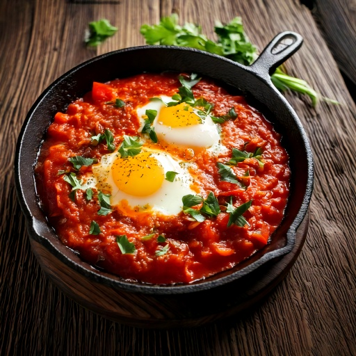

Poached eggs sa maanghang na tomato at bell pepper sauce — one-pan na almusal na may totoong gulay sa base nito.
Nutrition Info (bawat serving)
273
Calories
16g
Carbs
16g
Protein
17g
Fat
4g
Fiber
~25
Est. GI
Bakit Bagay Ito sa Diabetic-Friendly na Diet
Sa 16g carbs bawat serving, kasya ito nang komportable sa karamihan ng low-carb na meal plan para sa diabetes, at ang estimated glycemic index nitong ~25 ay nangangahulugang ang carbs dito ay mas mabagal ma-digest kumpara sa biglang pagtaas ng blood sugar.
Mga Sangkap
- 4 large4 large itlog
- 1 1/2 cup355 ml tinadtad na kamatis
- 1 medium1 medium bell pepper
- 1/2 medium1/2 medium sibuyas
- 2 clove2 clove bawang
- 1 tbsp15 ml olive oil
- 1/2 tsp2 ml cumin
- 1/2 tsp2 ml smoked paprika
- 1 tbsp15 ml sariwang parsley
Nasa App Na
Nasa GlucoBeacon app na ang recipe na ito — idagdag agad sa iyong Shopping List at daily carb tracker sa isang tap, libre.
Mga Hakbang
- Painitin ang olive oil sa malaking kawali at igisa ang sibuyas at bell pepper hanggang lumambot, mga 5 minuto.
- Idagdag ang bawang, cumin, at smoked paprika, at lutuin nang 1 minuto hanggang umamoy masarap.
- Ibuhos ang tinadtad na kamatis at lutuin nang mahina sa loob ng 8–10 minuto hanggang lumapot nang kaunti.
- Gumawa ng 4 na butas sa sauce at ipatak ang itlog sa bawat isa.
- Takpan at lutuin nang 6–8 minuto hanggang maluto ang puti ng itlog pero malambot pa rin ang pula.
- Tapusin ng sariwang parsley at ihain diretso mula sa kawali.